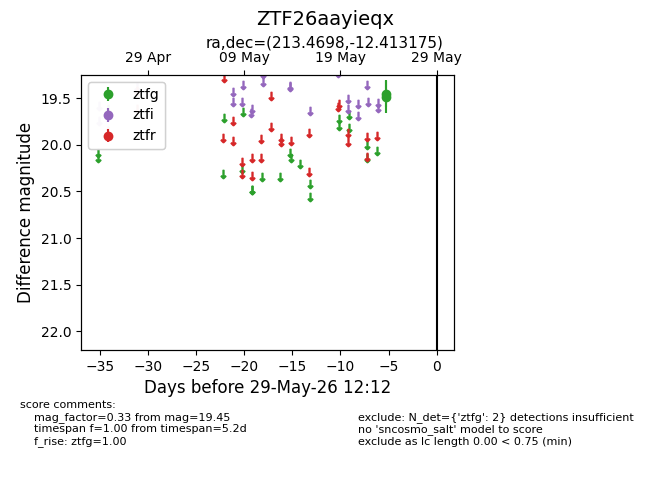
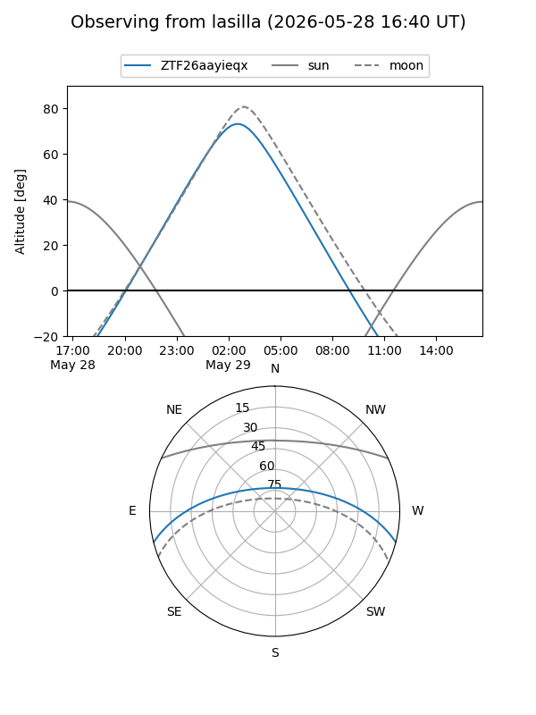
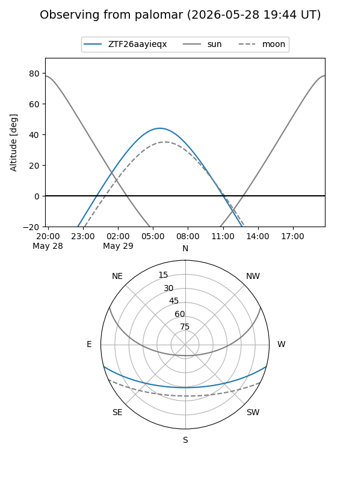

ZTF26aayieqx
Target ZTF26aayieqx at 2026-05-29 12:16
Aliases and brokers:
lsst-FINK: link
lsst-Lasair: link
lsst-ALeRCE: link
ztf-FINK: link
ztf-Lasair: link
ztf-ALeRCE: link
alt names
ZTF26aayieqx (ztf,fink_ztf)
Coordinates:
equatorial (ra, dec) = 213.4698,-12.41318
equatorial (HMS+DMS) = 14:13:52.74,-12:24:47.43
galactic (l, b) = (332.4116,+45.68695)
Flags:
Photometry:
last ztfg=19.45
2 ztfg detections
Lightcurve

Visibility


Additional plots